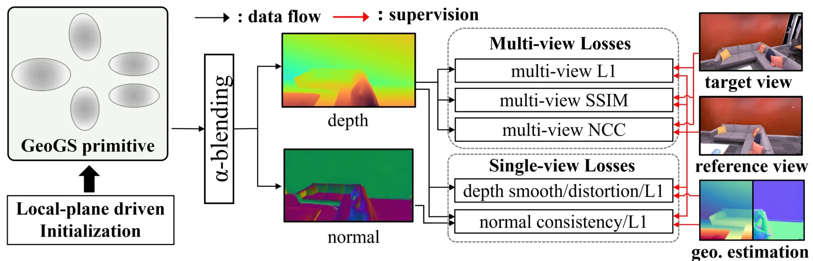
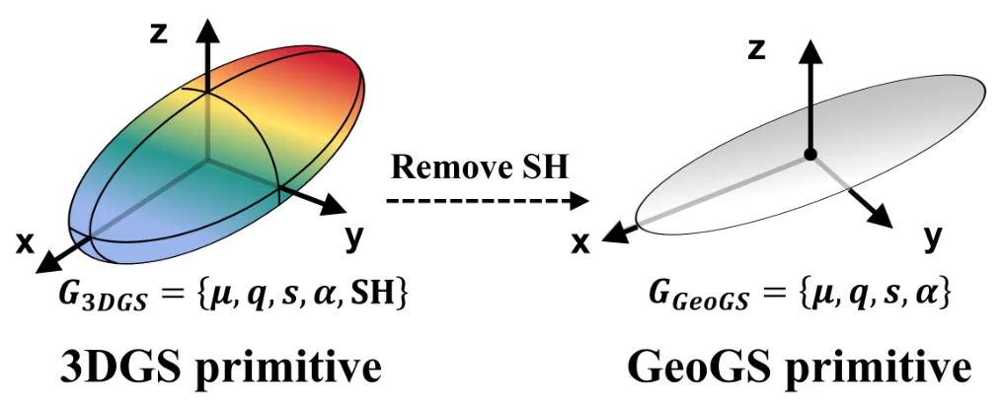
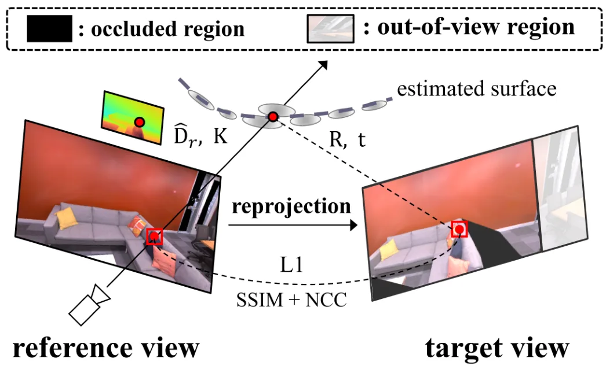
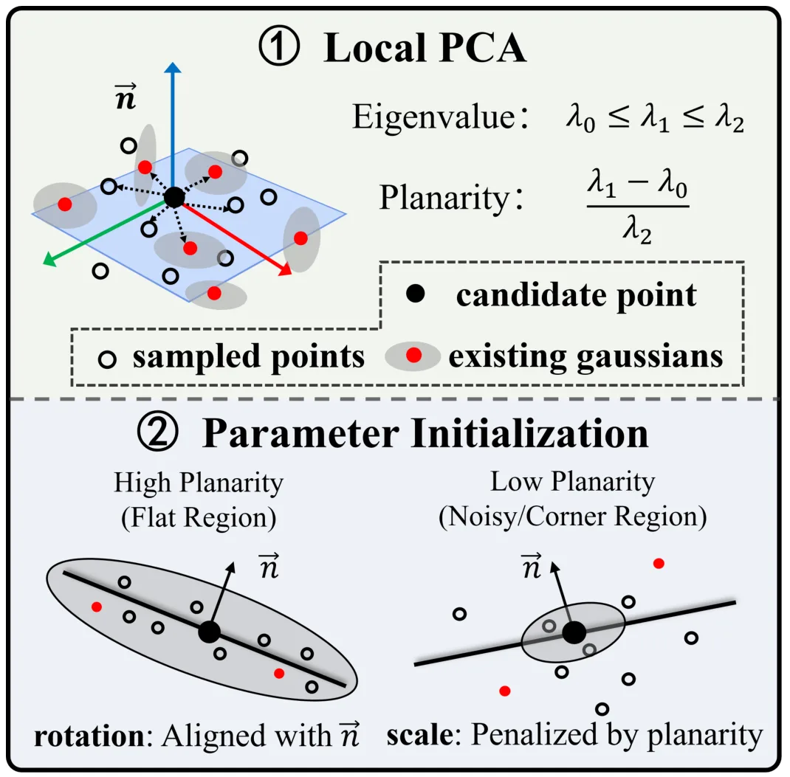
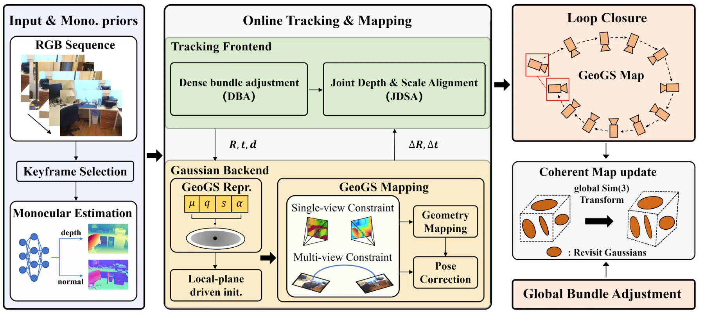

GeoGS-SLAM：面向稠密单目 SLAM 的纯几何高斯泼溅GeoGS-SLAM: Geometry-Only Gaussian Splatting for Dense Monocular SLAM
高度命中 3DGS-SLAM、稠密单目建图、回环地图更新和在线几何重建；创新点直接服务机器人导航/避障。需进一步核查单目尺度、深度监督来源和长期动态环境鲁棒性。
一句话工作总结
把 3DGS-SLAM 的核心从外观渲染压缩到几何建图，并专门处理回环后的 Gaussian 地图一致性。
摘要
本文提出 Geometry-only Gaussian Splatting（GeoGS），将 3DGS 从同时建模外观与几何转向只保留空间几何参数，单个 primitive 参数量减少超过 80%。基于 GeoGS，作者构建了稠密单目 SLAM 系统，通过单视图/多视图几何与光度监督、局部平面驱动初始化来加速几何收敛，并在回环后对 Gaussian 地图做全局变换更新，以避免不同视角独立位姿修正造成的地图撕裂。实验表明该方法在在线建图效率和几何重建质量上优于现有方法。
Dense visual SLAM is a fundamental problem in robotics. Recent advances in 3DGS have demonstrated its potential for dense SLAM. Existing 3DGS frameworks focus on both appearance and geometry modeling. However, scene geometry is typically more critical for SLAM than novel view synthesis because downstream robotic tasks, such as navigation and obstacle avoidance, rely primarily on accurate spatial geometry rather than photorealistic rendering. This observation raises a natural question: Is it feasible for 3DGS to perform 3D reconstruction without scene appearance modeling? Motivated by this, we propose Geometry-only Gaussian Splatting (GeoGS), which directly reconstructs scene geometry, and further present GeoGS-SLAM, a dense visual SLAM system built upon this representation. Specifically, GeoGS retains only spatial parameters to reduce the number of per-primitive parameters by over 80%. In contrast to existing 3DGS methods, GeoGS focuses solely on geometric reconstruction, which significantly reduces the number of Gaussian primitives, accelerates geometric convergence, and enhances robustness to illumination variations. In addition, we present an effective training framework that optimizes the Gaussian primitives via single-view and multi-view geometric and photometric supervision, and speeds up geometry convergence with a local-plane driven initialization that better aligns primitives with local structures. Furthermore, we introduce a map update strategy for loop closure that globally transforms the Gaussian map to align it with the corrected pose estimates, thereby preventing map tearing caused by inconsistent per-viewpoint pose corrections in existing methods. Extensive experiments on synthetic and real-world benchmarks demonstrate that our method outperforms SOTA methods in terms of online mapping efficiency and geometric reconstruction quality.
中文解读摘录
- 链接：https://arxiv.org/abs/2607.07452 ｜ PDF：https://arxiv.org/pdf/2607.07452
- 中文题名：GeoGS-SLAM：面向稠密单目 SLAM 的纯几何高斯泼溅
- 关键信息：提出 Geometry-only Gaussian Splatting（GeoGS），只保留空间几何参数，单个 primitive 参数量减少超过 80%；在此基础上构建 dense monocular SLAM，使用单视图/多视图几何与光度监督、局部平面初始化，并在回环后对 Gaussian 地图做全局变换更新以避免 map tearing。
- 为什么值得看：这是今天最贴近 SLAM 建图后端的工作，明确强调机器人导航/避障更依赖几何而非 photorealistic rendering；对 3DGS-SLAM 的效率、几何收敛和光照鲁棒性都有直接参考价值。
- 需要核查：单目尺度与深度监督来源、纯几何表示在弱纹理/动态物体下的稳定性、loop closure 全局地图变换是否保持局部一致性，以及与 RGB-D/visual-inertial 3DGS-SLAM 的公平速度对比。
图表/页面预览

{kind=link}

{kind=link}

{kind=link}

{kind=link}

{kind=link}
